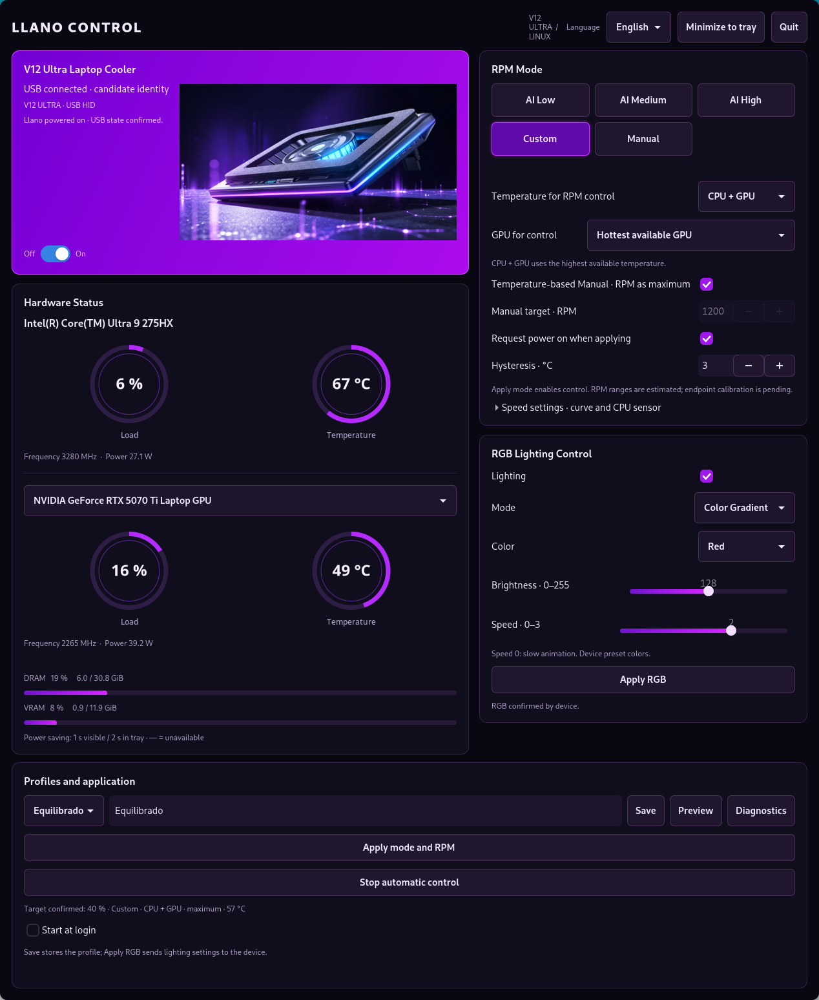

LLANO Control for Linux
A native GTK4 controller for the LLANO V12 Ultra laptop cooler. Control RGB lighting, configure temperature-based fan curves and monitor CPU/GPU telemetry from the application or system tray.
RGB, fan curves and hardware monitoring
- RGB effects, preset colors, brightness and animation speed.
- Fixed fan targets and temperature-based Manual, AI Low/Medium/High and Custom profiles.
- CPU, GPU or the highest available CPU/GPU temperature as the control source.
- Intel/AMD CPU and Intel/NVIDIA/AMD GPU telemetry where drivers expose readings.
- English and Spanish interface, system tray integration and optional login autostart.

Install on Linux
Developed on PikaOS with Hyprland. Requires Python 3.10+, GTK4, PyGObject and Cairo. See the installation instructions for PikaOS, Debian and Ubuntu, including USB device access and tray requirements.
Experimental hardware support. Physical Linux validation and calibration at the lowest and highest RPM targets remain incomplete. Displayed RPM targets are estimates, not tachometer readings. This is an independent project, not official LLANO software.
Controlador LLANO V12 Ultra para Linux
LLANO Control permite configurar la iluminación RGB y las curvas del ventilador, consultar las temperaturas de CPU y GPU y controlar la aplicación desde la bandeja del sistema. Consulta la guía de instalación y uso en español.